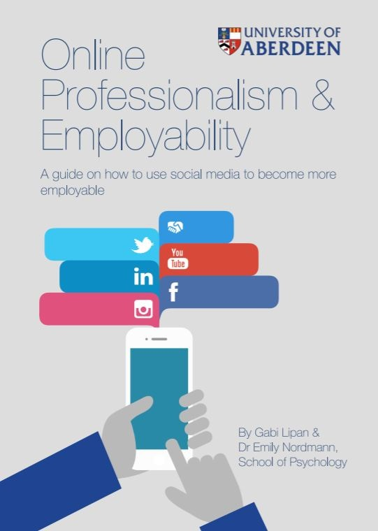

I joined the University of Glasgow on the 1st November 2018, so much of what comes below relates to my previous post at the University of Aberdeen. Watch this space for Glaswegian teaching updates as I get settled.
My Professional Values Statement for my Fellowship of the Higher Education Academy application stated that “My philosophy of teaching is based around building transparency, dialogue, and agency into all of my teaching practices”. When I’m not trying to get professional accreditation I’d say that my approach to teaching is that it has to be a two-way process and that you are a better and more effective teacher when you listen to what your students are telling you, whether that be explicitly through their feedback, or implicitly through how they perform and how they interact with you.
I lecture on individual differences at level 2 and research methods and statistics for our MSc conversion courses (face-to-face and online). I do small-group teaching at level 1, 2 and MSc including statistics using R. I supervise 6-8 dissertation students each year who tend to do projects on lecture capture or language-related topics.
In the last few years I tried to incorporate open science into my teaching where possible. I talked about the replication crisis in my level 1 methodology lectures and I was experimenting with pre-registration in my level 2 practical classes. My interest in open science is one of the big reasons I wanted to join the School of Psychology at Glasgow. I am proud and excited to be part of a School that is leading the way in teaching reproducible, open science and my part in this is focused on teaching research methods to our conversion course students.
I generally have techno-joy and like to play around with using technology in my teaching, for example, implementing retrieval practice during lectures with Ombea or using social media to help support student transitions into higher education.
My main focus in this area has settled on the use of lecture capture technology and how it impacts attendance and peformance. The short version of my opinion on this matter is that I am all for it, there’s no systematic evidence it impacts attendance and it may well provide pedagogic benefits. If you’d like the long version of my opinion see here.

Given my use of social media for teaching purposes I was awarded funding in 2016 from the Learning and Teaching Enhancement Programme at the University of Aberdeen to develop guidance to support students to use social media to boost their employability. This project was conducted with Gabi Lipan, who is now my PhD student and the guide we produced is freely available here.
In 2017 I was awarded further LTEP funding to investigate internal student transitions (e.g., moving from 2nd to 3rd year) with current undergraduate student Aletta Boerkoel. This project uses mixed-methods and aims to create resources that will help support students as they enter the next level of study by providing advice from their peers who have gone through the same process. The guides for second, third, and fourth year students are available online and we are in the process of writing up our findings for publication.